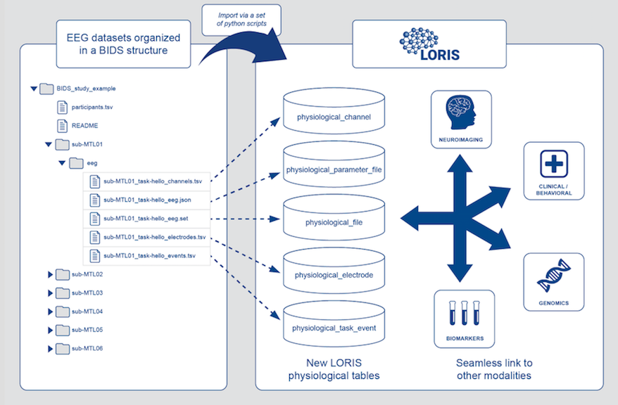
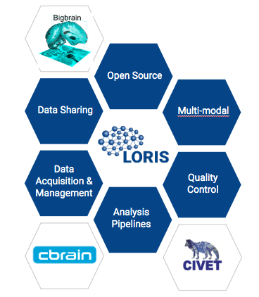
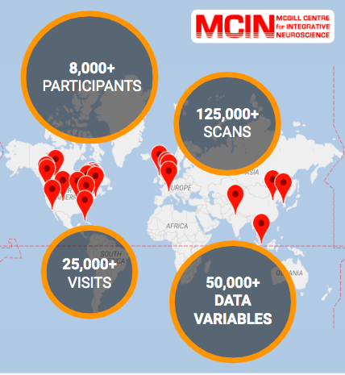

Open Science
Samir Das
Associate Director - Research Software Development
McGill Centre for Integrative Neuroscience
Montreal Neurological Institute

|

|

|
What is Open Science?

As this graph shows, the amount of data collected from
neuroscientific studies will only continue to increase exponentially.
Data Science is COMPLEX!
Benefits of Open Science
Increased exposure
Greater collaborations
More citations
Less money spent of patents
New funding opportunities
Improved reproducibility
Enable scientific discovery
...It's the future!
Aled Edwards, CEO
Structural Genomics Consortium
TED Talk: The Need for Biomedical Philanthropy
Data Publishing
- Not Data Sharing -
This is an important differentiation. Data publishing calls for extensive reviewing and quality control processes.

|


|
Best practices and standards are important in Open Science for usability and reproducability. |
What’s involved?
Longitudinal Acquisition, Storage and Curation, Interoperability, Reproducibility, Transfer, Anonymization, Security, Privacy, Ethics, APIs, Validation, Quality Control, Protocol Checking, Preprocessing, Analysis, HPC, Provenance, Ontological Standarization,
Data Harmonization, Upgrades, Maintenance, Bug Fixes, User Interface, Javascript, Bootstrap, Tracking, Extensibility, Data Management, Summary Statistics, Workflows, Development, Tool Integration, Data Sharing, Download, Multi-Modal Linking, Querying, Image Processing, Visualization, Networking, System Administration, Partnerships, Funding, HR ...No big deal!
Open Science Initiatives

|

|
Next, we'll look at some current initiatives.
MNI
Montreal Neurological Institute-Hospital
"The Neuro" integrates patient care with Open Science research.
Explore some of MNI's initiatives below.


MCIN's LORIS and CBRAIN platforms (more on these later) have demonstrated the technical capacity to address the challenges of open science at an institutional level

Richard Stallman |


|

Click to view this presentation for further details on our initiatives at the MNI.
HBHL
Exploring our brains' role in health and disease throughout our lives.
What is HBHL?
A high-priority, trans-disciplinary initiative focussing on areas of neuroscience that hold the greatest promise for delivering implementable, clinically effective outcomes in brain and mental health.
Supported by Canada First Research Excellence Fund (CFREF) and based at McGill University.
Scientific Director: Alan Evans.
CONP
Canadian Open Neuroscience Platform
A national platform for open sharing of neuroscience research data.
Explore some of CONP's initiatives below

Tannenbaum
Open Science
Initiative


OHBM
Explore some of OHBM's initiatives below.

Interoperability
Systems should allow the exchange
of data in standardized ways
Ontological Harmonization

API

File Formats

Imaging and Genomics

|

|
Standardization

= compatibility across data definitions and formats
Aligning data formats, metadata standards, streamlined computational
workflows, and brain atlases will streamline open data access


|


|
BIDS in LORIS Electrophysiology Browser
Download BIDS format data and metadata

Improving Infrastructure
Connectivity and Data Access

High Performance Computing Systems (HPC)

SQL versus NoSQL
Traditional vs. Scalable Data Querying

Version Control
Open tools for streamlining workflows and storing code, datasets, and more
|
|
|
Ethics Framework
|

|
Privacy Concerns


|
 Adrian Thorogood BIC lecture - March 9, 2016
Adrian Thorogood BIC lecture - March 9, 2016

|
What is LORIS?

“LORIS is a modular and extensible web-based data management system that integrates all aspects of a multi-center study: from heterogeneous data acquisition (imaging, clinical, behavior, genetics) to storage, processing and ultimately dissemination.” |

|
What does LORIS do?
LORIS Around the World!
Extensible and modular design


|


|
Multi-modal and BIDS-compliant features

Cross-Modal Querying
Real-Time Query Results
|
Released in 2019: LORIS best practices and operational procedures for data privacy and security |
What is CBRAIN?

|

|

..aggregates multiple distributed file systems into uniform view


|
Vital environments for collaboration and exchange of ideas, tools, and solutions for data sharing initiatives 
|

|

Thank you!Acknowledgements:Alan Evans, Alex Zijdenbos, Dario Vins, Jonathan Harlap, Matt Charlet, Andrew Corderey, Sebastian Muehlboeck, Reza Adalat, Louis Collins, Vladimir Fonov, Marc Rousseau, Mia Petkova, Rathi Gnanasekaran, David Brownlee, Tarek Sherif, Pierre Rioux, Nic Kassis, Leigh MacIntyre, Claude Lepage, Ilana Leppert, Natasha Beck, Tristan Glatard, Bert Vincent, Lindsay Lewis, Najma Mahani, Elodie Portales-Casamar, Alden Woodward, Sylvain Milot, Jean Francois Malouin, Daniel Kroetz, Martin Weiss, Mathieu Desrosier, Jason Karamchandani, Amit Bar-Or, Ted Fon, John Brietner, Derek Lo, Patrick Bermudez, Chris Steele, Pamela Patterson and one of my favourites: Pierre Bellec! LORIS team on left |